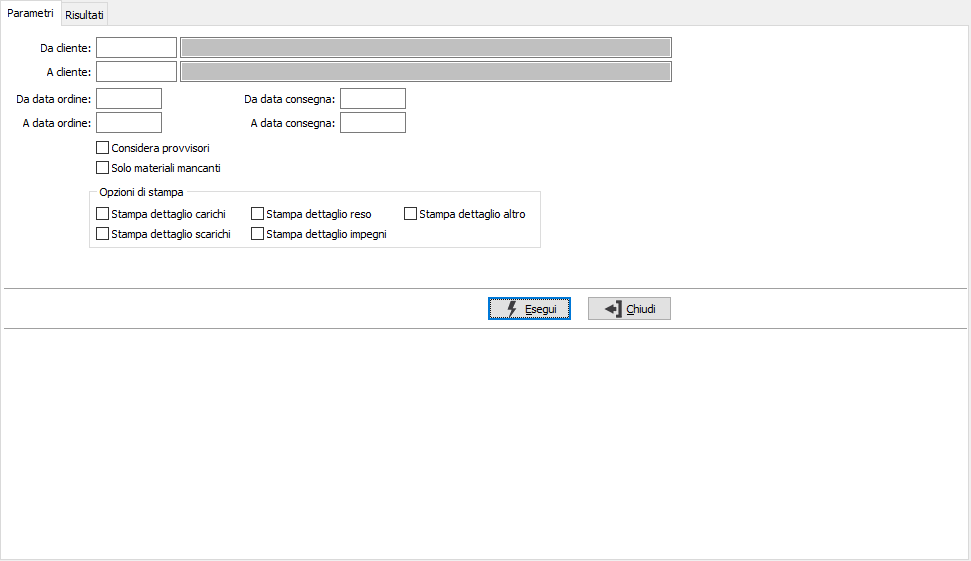
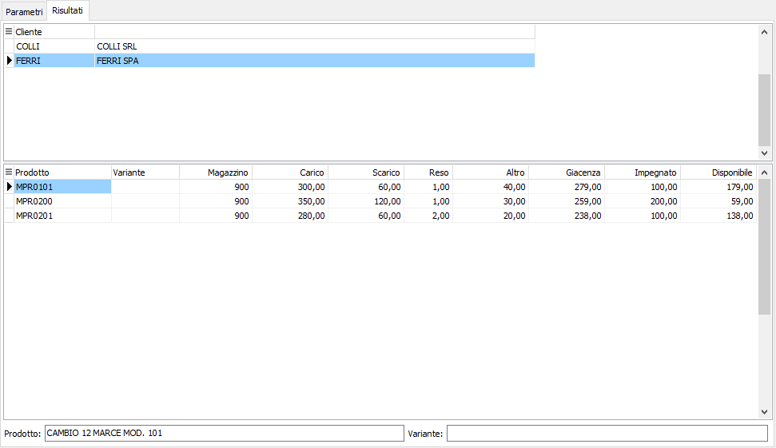

Analisi materiali forniti
L’analisi considera gli ordini del conto lavoro aperti per cui sono presenti ordini di lavorazione aperti anche provvisori, e riporta per ogni magazzino il carico, lo scarico, i resi, la giacenza, l’impegnato, il disponibile.

Nei parametri di selezione è possibile specificare cliente, data ordine e data consegna, inoltre tramite delle caselle di spunta è possibile includere nell'analisi gli ODP provvisori (casella Considera provvisori spuntata) e se nell’analisi devono essere riportati solo i materiali per cui non è presente sufficiente giacenza (casella Solo materiali mancanti spuntata).
L’analisi può essere eseguita anche a stampa e tramite i campi specificati nelle “Opzioni di stampa” è possibile indicare quali dettagli riportare.

Una volta impostati i criteri di selezione viene presentato nella griglia superiore l’elenco dei clienti relativi agli ordini del conto lavoro ancora aperti: per ognuno vengono visualizzate nella griglia le seguenti colonne per prodotto e magazzino:
Carico, le quantità relative ai Ddt di ingresso registrati dall’apposita procedura, il doppio click del mouse sulla cella mostra il dettaglio dei documenti registrati;
Scarico, le quantità relative a scarichi effettuati con documenti di versamento di produzione di ordini di produzione, il doppio click del mouse sulla cella mostra il dettaglio dei documenti registrati;
Reso, le quantità relative ai componenti degli ODL, derivanti da righe evase in ddt di uscita e derivanti a loro volta da ddt di ingresso, il doppio click del mouse sulla cella mostra il dettaglio dei documenti registrati;
Altro, le quantità relative a movimenti manuali sul magazzino interessato del cliente con tipo movimento interno, il doppio click del mouse sulla cella mostra il dettaglio dei movimenti registrati;
Giacenza, la giacenza del materiale;
Impegnato, le quantità impegnate del materiale nel magazzino del cliente, il doppio click del mouse sulla cella mostra il dettaglio dei documenti di impegno;
Disponibile, le quantità disponibili del materiale.
Dalla pagina Risultati, tramite i pulsanti presenti nella Toolbar sarà possibile effettuare la stampa.